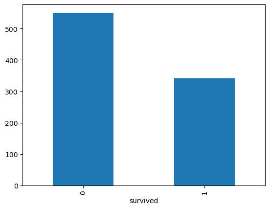
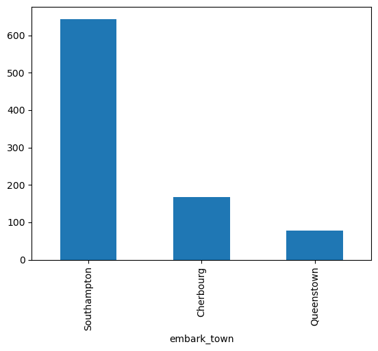
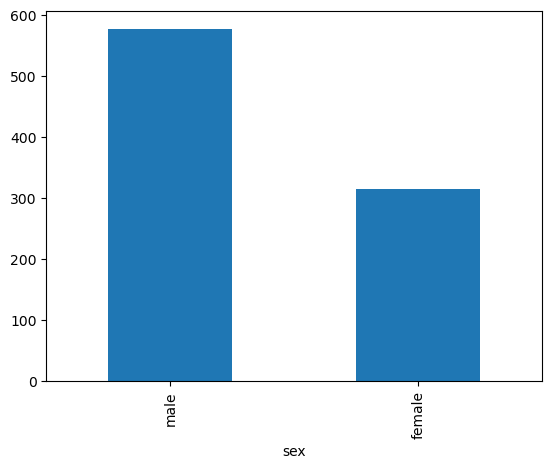
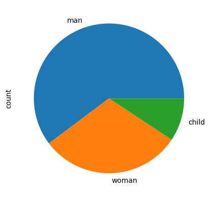
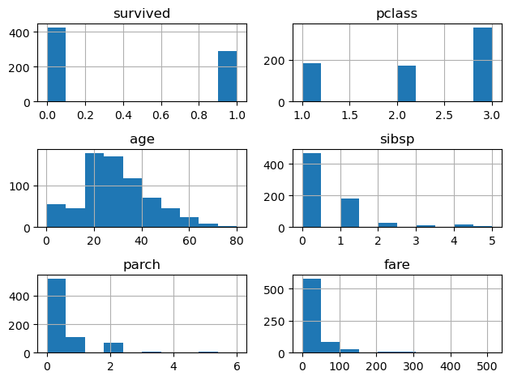
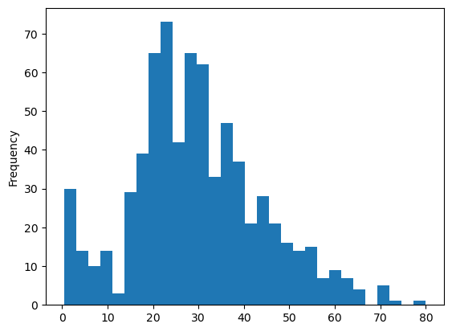
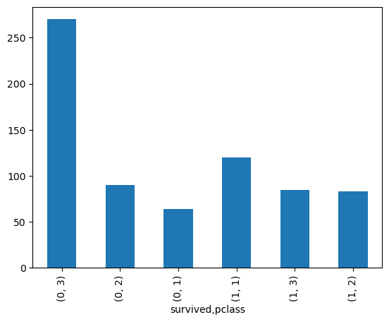
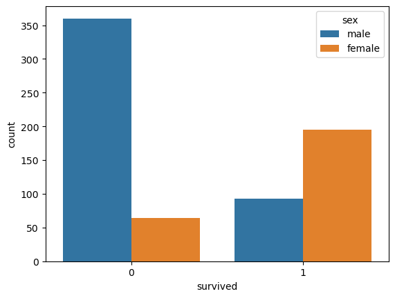
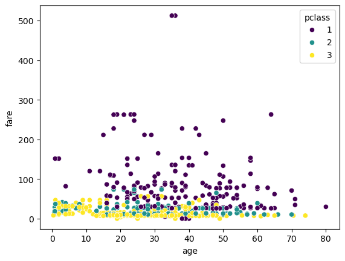

# import libraries
import numpy as np
import pandas as pd
import seaborn as sns
import matplotlib.pyplot as plt
import warnings
# Ignore all warnings
warnings.filterwarnings('ignore')Lecture 9 - Data Exploration and Preprocessing


- 9.1 Exploratory Data Analysis
- 9.2 Preprocessing Numerical Data
- 9.3 Preprocessing Categorical Data
- 9.4 Combining Numerical and Categorical Features
- References
9.1 Exploratory Data Analysis
Exploratory Data Analysis (EDA) is an important step in all data science projects, and involves several exploratory steps to obtain a better understanding of the data.
EDA typically includes: inspecting the summary statistics of the data, observing if there are missing values and adopting an appropriate strategy for handling them, checking the distribution of the features and whether there is a correlation between features, understanding which features are important and worth keeping and which ones are less important, and similar.
To provide an example of EDA, we will use the Titanic dataset which can be loaded from the Seaborn datasets.
titanic = sns.load_dataset('titanic')Let’s check the basic information about the data. There are 891 rows (samples) and 15 columns (features). We can see below the data types of each column.
titanic.info()<class 'pandas.core.frame.DataFrame'>
RangeIndex: 891 entries, 0 to 890
Data columns (total 15 columns):
# Column Non-Null Count Dtype
--- ------ -------------- -----
0 survived 891 non-null int64
1 pclass 891 non-null int64
2 sex 891 non-null object
3 age 714 non-null float64
4 sibsp 891 non-null int64
5 parch 891 non-null int64
6 fare 891 non-null float64
7 embarked 889 non-null object
8 class 891 non-null category
9 who 891 non-null object
10 adult_male 891 non-null bool
11 deck 203 non-null category
12 embark_town 889 non-null object
13 alive 891 non-null object
14 alone 891 non-null bool
dtypes: bool(2), category(2), float64(2), int64(4), object(5)
memory usage: 80.7+ KBLet’s display the first five rows and the last five rows. Each row presents data for one passenger on Titanic.
titanic.head()| survived | pclass | sex | age | sibsp | parch | fare | embarked | class | who | adult_male | deck | embark_town | alive | alone | |
|---|---|---|---|---|---|---|---|---|---|---|---|---|---|---|---|
| 0 | 0 | 3 | male | 22.0 | 1 | 0 | 7.2500 | S | Third | man | True | NaN | Southampton | no | False |
| 1 | 1 | 1 | female | 38.0 | 1 | 0 | 71.2833 | C | First | woman | False | C | Cherbourg | yes | False |
| 2 | 1 | 3 | female | 26.0 | 0 | 0 | 7.9250 | S | Third | woman | False | NaN | Southampton | yes | True |
| 3 | 1 | 1 | female | 35.0 | 1 | 0 | 53.1000 | S | First | woman | False | C | Southampton | yes | False |
| 4 | 0 | 3 | male | 35.0 | 0 | 0 | 8.0500 | S | Third | man | True | NaN | Southampton | no | True |
titanic.tail()| survived | pclass | sex | age | sibsp | parch | fare | embarked | class | who | adult_male | deck | embark_town | alive | alone | |
|---|---|---|---|---|---|---|---|---|---|---|---|---|---|---|---|
| 886 | 0 | 2 | male | 27.0 | 0 | 0 | 13.00 | S | Second | man | True | NaN | Southampton | no | True |
| 887 | 1 | 1 | female | 19.0 | 0 | 0 | 30.00 | S | First | woman | False | B | Southampton | yes | True |
| 888 | 0 | 3 | female | NaN | 1 | 2 | 23.45 | S | Third | woman | False | NaN | Southampton | no | False |
| 889 | 1 | 1 | male | 26.0 | 0 | 0 | 30.00 | C | First | man | True | C | Cherbourg | yes | True |
| 890 | 0 | 3 | male | 32.0 | 0 | 0 | 7.75 | Q | Third | man | True | NaN | Queenstown | no | True |
Let’s also see the summary statistic. Recall that statistics are shown only for the columns with numerical data.
titanic.describe()| survived | pclass | age | sibsp | parch | fare | |
|---|---|---|---|---|---|---|
| count | 891.000000 | 891.000000 | 714.000000 | 891.000000 | 891.000000 | 891.000000 |
| mean | 0.383838 | 2.308642 | 29.699118 | 0.523008 | 0.381594 | 32.204208 |
| std | 0.486592 | 0.836071 | 14.526497 | 1.102743 | 0.806057 | 49.693429 |
| min | 0.000000 | 1.000000 | 0.420000 | 0.000000 | 0.000000 | 0.000000 |
| 25% | 0.000000 | 2.000000 | 20.125000 | 0.000000 | 0.000000 | 7.910400 |
| 50% | 0.000000 | 3.000000 | 28.000000 | 0.000000 | 0.000000 | 14.454200 |
| 75% | 1.000000 | 3.000000 | 38.000000 | 1.000000 | 0.000000 | 31.000000 |
| max | 1.000000 | 3.000000 | 80.000000 | 8.000000 | 6.000000 | 512.329200 |
Let’s assume that our task is to predict whether the passenger shown in the next cell survived. I.e., we will take the survived column to be the target, and we will implement a classification algorithm to predict it based on the other columns in the dataset.
titanic.head(1)| survived | pclass | sex | age | sibsp | parch | fare | embarked | class | who | adult_male | deck | embark_town | alive | alone | |
|---|---|---|---|---|---|---|---|---|---|---|---|---|---|---|---|
| 0 | 0 | 3 | male | 22.0 | 1 | 0 | 7.25 | S | Third | man | True | NaN | Southampton | no | False |
9.1.1 Exploring Column Information
Let’s first inspect some of the columns in the dataset.
Let’s start with the survived column, where we can use the following code to find how many passengers survived and how many died.
titanic['survived'].value_counts()survived
0 549
1 342
Name: count, dtype: int64It is often easier to understand the data if we plot the values. The pandas library provides basic plotting functions. For instance, in the next cell we created a bar plot by using plot(kind='bar') directly in pandas. The syntax for plotting in pandas is somewhat different than the matplotlib library, and admittedly, the functionality for plotting in pandas is limited. Both matplotlib and Seaborn libraries allow plotting directly using DataFrames and provide improved visualizations in comparison to pandas plots.
titanic['survived'].value_counts().plot(kind='bar');
Notice that there is a column called alive which is the same as the survived column. We need to remove this column from the data, otherwise the classifier model can just use the alive column to make predictions for the survived passengers, and will achieve very high accuracy.
titanic['alive'].value_counts()alive
no 549
yes 342
Name: count, dtype: int64titanic.drop(['alive'], axis=1, inplace=True)# verify the change
titanic.head()| survived | pclass | sex | age | sibsp | parch | fare | embarked | class | who | adult_male | deck | embark_town | alone | |
|---|---|---|---|---|---|---|---|---|---|---|---|---|---|---|
| 0 | 0 | 3 | male | 22.0 | 1 | 0 | 7.2500 | S | Third | man | True | NaN | Southampton | False |
| 1 | 1 | 1 | female | 38.0 | 1 | 0 | 71.2833 | C | First | woman | False | C | Cherbourg | False |
| 2 | 1 | 3 | female | 26.0 | 0 | 0 | 7.9250 | S | Third | woman | False | NaN | Southampton | True |
| 3 | 1 | 1 | female | 35.0 | 1 | 0 | 53.1000 | S | First | woman | False | C | Southampton | False |
| 4 | 0 | 3 | male | 35.0 | 0 | 0 | 8.0500 | S | Third | man | True | NaN | Southampton | True |
Also, there are two columns called class and plass. Let’s examine how many passengers are in these columns.
titanic['pclass'].value_counts()pclass
3 491
1 216
2 184
Name: count, dtype: int64titanic['class'].value_counts()class
Third 491
First 216
Second 184
Name: count, dtype: int64# compare the two columns
p_class = titanic[['pclass', 'class']]
p_class.head(10)| pclass | class | |
|---|---|---|
| 0 | 3 | Third |
| 1 | 1 | First |
| 2 | 3 | Third |
| 3 | 1 | First |
| 4 | 3 | Third |
| 5 | 3 | Third |
| 6 | 1 | First |
| 7 | 3 | Third |
| 8 | 3 | Third |
| 9 | 2 | Second |
It seems that both of these columns are the same, except that one is numeric and the other contains text. Let’s drop the class column.
Removing columns that have the same information, also known as redundant features, can improve the performance of machine learning models. Specifically, redundant features can cause the model to overfit, as it may learn to rely too heavily on these features for making predictions. Also, having redundant features can lead to longer training times and higher computational complexity.
titanic.drop('class', axis=1, inplace=True)# verify the change
titanic.head()| survived | pclass | sex | age | sibsp | parch | fare | embarked | who | adult_male | deck | embark_town | alone | |
|---|---|---|---|---|---|---|---|---|---|---|---|---|---|
| 0 | 0 | 3 | male | 22.0 | 1 | 0 | 7.2500 | S | man | True | NaN | Southampton | False |
| 1 | 1 | 1 | female | 38.0 | 1 | 0 | 71.2833 | C | woman | False | C | Cherbourg | False |
| 2 | 1 | 3 | female | 26.0 | 0 | 0 | 7.9250 | S | woman | False | NaN | Southampton | True |
| 3 | 1 | 1 | female | 35.0 | 1 | 0 | 53.1000 | S | woman | False | C | Southampton | False |
| 4 | 0 | 3 | male | 35.0 | 0 | 0 | 8.0500 | S | man | True | NaN | Southampton | True |
Let’s explore the two columns embarked and embark_town.
titanic['embarked'].value_counts()embarked
S 644
C 168
Q 77
Name: count, dtype: int64titanic['embark_town'].value_counts()embark_town
Southampton 644
Cherbourg 168
Queenstown 77
Name: count, dtype: int64They are the same, therefore, drop embarked.
titanic.drop('embarked', axis=1, inplace=True)# verify the change
titanic.head()| survived | pclass | sex | age | sibsp | parch | fare | who | adult_male | deck | embark_town | alone | |
|---|---|---|---|---|---|---|---|---|---|---|---|---|
| 0 | 0 | 3 | male | 22.0 | 1 | 0 | 7.2500 | man | True | NaN | Southampton | False |
| 1 | 1 | 1 | female | 38.0 | 1 | 0 | 71.2833 | woman | False | C | Cherbourg | False |
| 2 | 1 | 3 | female | 26.0 | 0 | 0 | 7.9250 | woman | False | NaN | Southampton | True |
| 3 | 1 | 1 | female | 35.0 | 1 | 0 | 53.1000 | woman | False | C | Southampton | False |
| 4 | 0 | 3 | male | 35.0 | 0 | 0 | 8.0500 | man | True | NaN | Southampton | True |
Let’s plot the occurrences in embark_town in a bar plot.
titanic['embark_town'].value_counts().plot(kind='bar');
Also, let’s check how many men and women there are in the dataset.
titanic['sex'].value_counts()sex
male 577
female 314
Name: count, dtype: int64titanic['sex'].value_counts().plot(kind='bar');
titanic['who'].value_counts()who
man 537
woman 271
child 83
Name: count, dtype: int64We can note that the column who is similar to the sex column, but it also includes the number of children.
As an exercise, let’s show the categories of the column who using a Pie Chart to visualize their values.
titanic.who.value_counts().plot(kind='pie');
There is another column adult_male which is similar, but different than sex and who. Since those columns provide different information, it may be beneficial to leave them all in the dataset that we will use later for model training.
titanic['adult_male'].value_counts()adult_male
True 537
False 354
Name: count, dtype: int649.1.2 Dealing with Missing Data
Let’s check which columns have data missing.
titanic.isnull().sum()survived 0
pclass 0
sex 0
age 177
sibsp 0
parch 0
fare 0
who 0
adult_male 0
deck 688
embark_town 2
alone 0
dtype: int64There are missing data in age, deck, and embark_town columns.
The deck column has missing values in most of the rows, and there isn’t a reliable way to supply this information for the missing rows, thus, let’s drop it.
titanic.drop('deck', axis=1, inplace=True)# verify the change
titanic.head()| survived | pclass | sex | age | sibsp | parch | fare | who | adult_male | embark_town | alone | |
|---|---|---|---|---|---|---|---|---|---|---|---|
| 0 | 0 | 3 | male | 22.0 | 1 | 0 | 7.2500 | man | True | Southampton | False |
| 1 | 1 | 1 | female | 38.0 | 1 | 0 | 71.2833 | woman | False | Cherbourg | False |
| 2 | 1 | 3 | female | 26.0 | 0 | 0 | 7.9250 | woman | False | Southampton | True |
| 3 | 1 | 1 | female | 35.0 | 1 | 0 | 53.1000 | woman | False | Southampton | False |
| 4 | 0 | 3 | male | 35.0 | 0 | 0 | 8.0500 | man | True | Southampton | True |
Since only 2 rows are missing in embark town let’s remove those two rows. In the next cell we used dropna to remove only those rows that have missing values in the the embark town column.
Recall again that to drop columns in pandas we use axis=1 and to drop rows we use axis=0.
titanic.dropna(subset=['embark_town'], axis=0, inplace=True)We can notice that the number of rows was reduced to 889 from the original 891, because of the removed 2 rows.
# verify the change
titanic.shape(889, 11)Now we have NaN values only in the age column.
titanic.isnull().sum()survived 0
pclass 0
sex 0
age 177
sibsp 0
parch 0
fare 0
who 0
adult_male 0
embark_town 0
alone 0
dtype: int64There are several ways to deal with this issue. One is to replace the missing values in a column with the average value of the column, or with some other value (e.g., 0 in some cases, based on the type of data).
Let’s first explore the first option, and let’s create a new DataFrame called titanic_filled that is a copy of the titanic DataFrame, and let’s replace the missing values in the age column with the average age of the passengers. For this purpose we will use the method fillna that will calculate the mean and fill in the missing values.
titanic_filled = titanic.copy()
titanic_filled['age'].fillna(titanic_filled['age'].mean(), inplace=True)To verify the above, let’s display several rows that have missing values for the age, and let’s display below the DataFrame with the filled values. We can note that the average age is 29.64 years.
titanic.head(8)| survived | pclass | sex | age | sibsp | parch | fare | who | adult_male | embark_town | alone | |
|---|---|---|---|---|---|---|---|---|---|---|---|
| 0 | 0 | 3 | male | 22.0 | 1 | 0 | 7.2500 | man | True | Southampton | False |
| 1 | 1 | 1 | female | 38.0 | 1 | 0 | 71.2833 | woman | False | Cherbourg | False |
| 2 | 1 | 3 | female | 26.0 | 0 | 0 | 7.9250 | woman | False | Southampton | True |
| 3 | 1 | 1 | female | 35.0 | 1 | 0 | 53.1000 | woman | False | Southampton | False |
| 4 | 0 | 3 | male | 35.0 | 0 | 0 | 8.0500 | man | True | Southampton | True |
| 5 | 0 | 3 | male | NaN | 0 | 0 | 8.4583 | man | True | Queenstown | True |
| 6 | 0 | 1 | male | 54.0 | 0 | 0 | 51.8625 | man | True | Southampton | True |
| 7 | 0 | 3 | male | 2.0 | 3 | 1 | 21.0750 | child | False | Southampton | False |
titanic_filled.head(8)| survived | pclass | sex | age | sibsp | parch | fare | who | adult_male | embark_town | alone | |
|---|---|---|---|---|---|---|---|---|---|---|---|
| 0 | 0 | 3 | male | 22.000000 | 1 | 0 | 7.2500 | man | True | Southampton | False |
| 1 | 1 | 1 | female | 38.000000 | 1 | 0 | 71.2833 | woman | False | Cherbourg | False |
| 2 | 1 | 3 | female | 26.000000 | 0 | 0 | 7.9250 | woman | False | Southampton | True |
| 3 | 1 | 1 | female | 35.000000 | 1 | 0 | 53.1000 | woman | False | Southampton | False |
| 4 | 0 | 3 | male | 35.000000 | 0 | 0 | 8.0500 | man | True | Southampton | True |
| 5 | 0 | 3 | male | 29.642093 | 0 | 0 | 8.4583 | man | True | Queenstown | True |
| 6 | 0 | 1 | male | 54.000000 | 0 | 0 | 51.8625 | man | True | Southampton | True |
| 7 | 0 | 3 | male | 2.000000 | 3 | 1 | 21.0750 | child | False | Southampton | False |
We can observe now that there are no missing values in the titanic_filled DataFrame.
titanic_filled.isnull().sum()survived 0
pclass 0
sex 0
age 0
sibsp 0
parch 0
fare 0
who 0
adult_male 0
embark_town 0
alone 0
dtype: int64Another alternative is to drop the rows with the missing values for the age. Let’s explore this strategy as well.
In general, we can try both strategies and check which one produces better results with the classification algorithm.
After dropping the rows with missing values, 712 rows remain in the dataset. The method reset_index will change the index column to range from 0 to 711. If we didn’t reset the index column, the index values would have still ranged from 0 to 891.
titanic.dropna(inplace=True)titanic.reset_index(inplace=True)titanic.info()<class 'pandas.core.frame.DataFrame'>
RangeIndex: 712 entries, 0 to 711
Data columns (total 12 columns):
# Column Non-Null Count Dtype
--- ------ -------------- -----
0 index 712 non-null int64
1 survived 712 non-null int64
2 pclass 712 non-null int64
3 sex 712 non-null object
4 age 712 non-null float64
5 sibsp 712 non-null int64
6 parch 712 non-null int64
7 fare 712 non-null float64
8 who 712 non-null object
9 adult_male 712 non-null bool
10 embark_town 712 non-null object
11 alone 712 non-null bool
dtypes: bool(2), float64(2), int64(5), object(3)
memory usage: 57.1+ KBtitanic.head()| index | survived | pclass | sex | age | sibsp | parch | fare | who | adult_male | embark_town | alone | |
|---|---|---|---|---|---|---|---|---|---|---|---|---|
| 0 | 0 | 0 | 3 | male | 22.0 | 1 | 0 | 7.2500 | man | True | Southampton | False |
| 1 | 1 | 1 | 1 | female | 38.0 | 1 | 0 | 71.2833 | woman | False | Cherbourg | False |
| 2 | 2 | 1 | 3 | female | 26.0 | 0 | 0 | 7.9250 | woman | False | Southampton | True |
| 3 | 3 | 1 | 1 | female | 35.0 | 1 | 0 | 53.1000 | woman | False | Southampton | False |
| 4 | 4 | 0 | 3 | male | 35.0 | 0 | 0 | 8.0500 | man | True | Southampton | True |
9.1.3 Checking Feature Distribution
Let’s check the distribution of the numerical columns in the dataset, by plotting the histograms. For the columns with categorical data, such as survived and pclass, the histograms are equivalent to bar plots, and are less helpful.
titanic[['survived','pclass','age','sibsp','parch','fare']].hist(bins=10)
plt.tight_layout()
plt.show()
Or, we can inspect the distribution of each feature.
titanic['age'].plot(kind='hist', bins=30);
If we wish, we can use the groupby function in pandas, for instance, to show the counts for the pclass column grouped by survived.
titanic.groupby('survived')['pclass'].value_counts().plot(kind="bar");
As we mentioned earlier, although the pandas library provides some functionality for plotting directly from DataFrames, other plotting libraries provide improved graphs. A few plots created with Seaborn are shown below.
sns.countplot(data=titanic, x='survived', hue='sex');
In the next figure we can see a scatter plot of the age, grouped by fare and class. As expected, the fare in the first class was more expensive, in comparison to the second and third classes.
sns.scatterplot(data=titanic, x='age', y='fare', hue='pclass', palette='viridis');
Visualization of the data during Exploratory Data Analysis is also a powerful tool for identyfing outliers. Understanding and addressing outliers in data is important for building robust and accurate machine learning models. In this dataset we don’t see presense of outliers.
9.2 Preprocessing Numerical Data
Tabular data can be classified into two main categories:
- Numerical data: a quantity represented by a real or integer number.
- Categorical data: a discrete value, typically represented by string labels taken from a finite list of possible choices, but it is also possible to be represented by numbers from a discrete set of possible choices.
Most machine learning algorithms are sensitive to the range of values that are used for numerical inputs, and expect the input features to be scaled before processing. Feature scaling is transforming the numerical features into a standardized range of values.
Common feature scaling techniques for numerical features include:
- Normalization
- Standardization
- Robust scaling
Whether or not a machine learning model requires scaling of the features depends on the model family. Linear models, such as logistic regression, generally benefit from scaling the features, while other models such as tree-based models (i.e., decision trees, random forests) do not need such preprocessing.
9.2.1 Normalization
Normalization is a scaling technique that transforms numerical features into a range of values between 0 and 1. When we work with features that have different ranges of values, normalizing the features can enhance the performance of ML models. For example, if we have one feature (column) in the range from 100-1000, and another feature varies from 0.05-0.2, we can scale them so that they both have a range of values from 0 to 1.
Normalizing data is performed using the following formula, where \(X_{min}\) is the minimum value of feature \(X\), and \(X_{max}\) is the maximum value of \(X\).
\(X_{\text{norm}} = \frac {X-X_{min}} {X_{max}-X_{min}}\)
For illustration purposes of normalization, we will use the smaller dataset tips available in Seaborn.
tip_data = sns.load_dataset('tips')
tip_data.head()| total_bill | tip | sex | smoker | day | time | size | |
|---|---|---|---|---|---|---|---|
| 0 | 16.99 | 1.01 | Female | No | Sun | Dinner | 2 |
| 1 | 10.34 | 1.66 | Male | No | Sun | Dinner | 3 |
| 2 | 21.01 | 3.50 | Male | No | Sun | Dinner | 3 |
| 3 | 23.68 | 3.31 | Male | No | Sun | Dinner | 2 |
| 4 | 24.59 | 3.61 | Female | No | Sun | Dinner | 4 |
Let’s separate all numerical features from the above data into a new DataFrame original_features.
original_features = tip_data[['total_bill', 'tip', 'size']]To perform normalization, we will use the scikit-learn library which provides the function MinMaxScaler() to scale the data to the range between 0 and 1. That is the default range, but we can also select an arbitrary range to scale the data.
The fit method in the code below first fits the data, i.e., for this task it calculates the minimum and maximum values for each column.
Afterwards, the transform method scales the data, i.e., it uses the calculated minimum and maximum values for each column and substitutes them in the above formula to obtain scaled values of the data.
The syntax is scaler.fit(data) and scaler.transform(data).
from sklearn.preprocessing import MinMaxScaler
minmax_scaler = MinMaxScaler()
minmax_scaler.fit(original_features)
normalized_features = minmax_scaler.transform(original_features)The output of MinMaxScaler() is a NumPy array, with the values in each column scaled in the range between 0 and 1.
type(normalized_features)numpy.ndarrayLet’s check the original and the normalized features.
# Show the first five rows in the original data 'total_bill', 'tip', and 'size'
original_features[:5]| total_bill | tip | size | |
|---|---|---|---|
| 0 | 16.99 | 1.01 | 2 |
| 1 | 10.34 | 1.66 | 3 |
| 2 | 21.01 | 3.50 | 3 |
| 3 | 23.68 | 3.31 | 2 |
| 4 | 24.59 | 3.61 | 4 |
# Show the first five rows in the normalized data 'total_bill', 'tip', and 'size'
# Convert the numpy array into a DataFrame first for displaying purpose only
pd.DataFrame(normalized_features[:5])| 0 | 1 | 2 | |
|---|---|---|---|
| 0 | 0.291579 | 0.001111 | 0.2 |
| 1 | 0.152283 | 0.073333 | 0.4 |
| 2 | 0.375786 | 0.277778 | 0.4 |
| 3 | 0.431713 | 0.256667 | 0.2 |
| 4 | 0.450775 | 0.290000 | 0.6 |
The scikit-learn library also provides a combined method fit_transform which calls first fit and then transform in one step. This can be more efficient than calling fit and transform separately. The syntax is scaler.fit_transform(data).
normalized_features_2 = minmax_scaler.fit_transform(original_features)# Show the first five rows in 'total_bill', 'tip', and 'size'
# Convert the numpy array into a DataFrame first for displaying purpose only
pd.DataFrame(normalized_features_2[:5])| 0 | 1 | 2 | |
|---|---|---|---|
| 0 | 0.291579 | 0.001111 | 0.2 |
| 1 | 0.152283 | 0.073333 | 0.4 |
| 2 | 0.375786 | 0.277778 | 0.4 |
| 3 | 0.431713 | 0.256667 | 0.2 |
| 4 | 0.450775 | 0.290000 | 0.6 |
9.2.2 Standardization
Standardization is another scaling technique where numerical features are rescaled to have 0 mean (\(\mu\)) and 1 standard deviation (\(\sigma\) ).
The formula for standardization is as follows:
\(X_{\text{std}} = \frac {X - \mu} {\sigma}\)
where \(X_{\text{std}}\) is the standardized feature, \(X\) is the original feature, \(\mu\) is the mean of the feature, and \(\sigma\) is the standard deviation.
Standardizing the features is preferred when we know that the training data has a normal (Gaussian) distribution. And, if the data does not have normal distribution, then normalization is a preferable scaling technique to standardization.
With some machine learning algorithms the performance will be the same with features scaling using normalization or standardization, but with other algorithms, there can be a difference in the performance. If it is feasible, we can try both feature scaling techniques, especially if we are not sure about the distribution of the data.
Standardization is implemented in scikit-learn with StandardScaler. Similar to MinMaxScaler, we can either use the syntax scaler.fit_transform(data) or the syntax with scaler.fit(data) and scaler.transform(data). A brief explanation of the differences between these two syntaxes is provided in Section 11.4 below, and we will provide an additional explanation in the next lecture when we introduce the concepts of training and testing datasets.
from sklearn.preprocessing import StandardScaler
std_scaler = StandardScaler()
standardized_features = std_scaler.fit_transform(original_features)standardized_features[:5]array([[-0.31471131, -1.43994695, -0.60019263],
[-1.06323531, -0.96920534, 0.45338292],
[ 0.1377799 , 0.36335554, 0.45338292],
[ 0.4383151 , 0.22575414, -0.60019263],
[ 0.5407447 , 0.4430195 , 1.50695847]])We can inspect the mean and standard variation of the original data using the mean_ and var_ attributes. The convention in scikit-learn is that if an attribute is learned from the data, its name ends with an underscore, as in mean_ and var_ for the StandardScaler.
# The mean of each feature in the original data
std_scaler.mean_array([19.78594262, 2.99827869, 2.56967213])# The variance each feature in the original data
std_scaler.var_array([78.92813149, 1.90660851, 0.9008835 ])As expected, each column in the scaled data standardized_features has zero mean and unit variance.
# The mean of each feature in the scaled data
np.round(standardized_features.mean(axis=0))array([-0., 0., -0.])# The variance each feature in the scaled data
np.round(standardized_features.std(axis=0))array([1., 1., 1.])It is easy to confuse normalization with standardization, since standardization rescales the data to have a normal distribution with mean 0 and standard deviation 1, therefore, pay attention and try not to mix up these two scaling techniques.
9.2.3 Robust Scaling
Scikit-learn provides another scaling method called RobustScaler, which is more suitable when the data contain many outliers.
RobustScaler applies similar scaling to standardization, but it uses the median and the interquartile range (IQR) instead of the mean and standard deviation to scale the features. This makes it less sensitive to extreme values or outliers in the data. Recall the Interquartile Range(IQR) is the difference between the 1st quartile (25th percentile) and the 3rd quartile (75th percentile).
\(X_{\text{robust}} = \frac{X - \mathrm{median}}{\mathrm{IQR}}\)
This means that the data in each column will be centered to have a median 0, and the interquartile range is equal to 1.
Because of that, RobustScaler is also more suitable for datasets with non-normal distributions.
from sklearn.preprocessing import RobustScaler
rob_scaler = RobustScaler()
robust_scaled_features = rob_scaler.fit_transform(original_features)robust_scaled_features[:5]array([[-0.07467532, -1.2096 , 0. ],
[-0.69155844, -0.7936 , 1. ],
[ 0.29823748, 0.384 , 1. ],
[ 0.54591837, 0.2624 , 0. ],
[ 0.63033395, 0.4544 , 2. ]])We can confirm that the columns in the scaled data have 0 median.
np.round(np.median(robust_scaled_features, axis=0))array([-0., 0., 0.])The MinMaxScaler, StandardScaler, and RobustScaler in scikit-learn are also called transformers, since they are used to perform various data transformations on the original dataset before feeding the data into a machine learning model. Transformers are an essential part of the data processing in scikit-learn’s pipeline.
9.3 Preprocessing Categorical Data
Categorical data contain a limited number of discrete categories. An example is the feature who in the titanic dataset that has three categories: man, woman, and child.
In many cases, categorical features have text values, and they need to be converted into numerical values in order to be processed by machine learning algorithms.
We will look into the following techniques for converting categorical features into numerical features:
- Mapping method
- Ordinal encoding
- Label encoding
- Pandas dummies
- One-hot encoding
The first three techniques produce a single number for each category, and the last two techniques produce one-hot matrix.
We are going to use again the Titanic dataset, which has several categorical features.
titanic.head()| index | survived | pclass | sex | age | sibsp | parch | fare | who | adult_male | embark_town | alone | |
|---|---|---|---|---|---|---|---|---|---|---|---|---|
| 0 | 0 | 0 | 3 | male | 22.0 | 1 | 0 | 7.2500 | man | True | Southampton | False |
| 1 | 1 | 1 | 1 | female | 38.0 | 1 | 0 | 71.2833 | woman | False | Cherbourg | False |
| 2 | 2 | 1 | 3 | female | 26.0 | 0 | 0 | 7.9250 | woman | False | Southampton | True |
| 3 | 3 | 1 | 1 | female | 35.0 | 1 | 0 | 53.1000 | woman | False | Southampton | False |
| 4 | 4 | 0 | 3 | male | 35.0 | 0 | 0 | 8.0500 | man | True | Southampton | True |
9.3.1 Mapping Method
The mapping method is a straightforward way to encode categorical features when there are few categories. For instance, for the who feature, we will create a dictionary map_dict whose keys are the three categories man, woman, child, and they are mapped to numerical values 0, 1, and 2.
titanic['who'].value_counts()who
man 413
woman 216
child 83
Name: count, dtype: int64map_dict = {'man': 0, 'woman': 1, 'child': 2}The map() method is applied next to map the keys to values in the who column.
titanic['who'] = titanic['who'].map(map_dict)Notice below that the who feature is numerical, and all instances with the class man were replaced with 0, and the same applies to the other two classes.
titanic.head()| index | survived | pclass | sex | age | sibsp | parch | fare | who | adult_male | embark_town | alone | |
|---|---|---|---|---|---|---|---|---|---|---|---|---|
| 0 | 0 | 0 | 3 | male | 22.0 | 1 | 0 | 7.2500 | 0 | True | Southampton | False |
| 1 | 1 | 1 | 1 | female | 38.0 | 1 | 0 | 71.2833 | 1 | False | Cherbourg | False |
| 2 | 2 | 1 | 3 | female | 26.0 | 0 | 0 | 7.9250 | 1 | False | Southampton | True |
| 3 | 3 | 1 | 1 | female | 35.0 | 1 | 0 | 53.1000 | 1 | False | Southampton | False |
| 4 | 4 | 0 | 3 | male | 35.0 | 0 | 0 | 8.0500 | 0 | True | Southampton | True |
# verify that value_counts remained the same after the mapping
titanic['who'].value_counts()who
0 413
1 216
2 83
Name: count, dtype: int649.3.2 Ordinal Encoding
Ordinal encoding can be implemented with the OrdinalEncoder in scikit-learn, which automatically encodes each category with a different numerical value. This method is often preferred, since it is automated and less prone to errors.
Let’s apply it to the columns alone and adult_male.
titanic['alone'].value_counts()alone
True 402
False 310
Name: count, dtype: int64titanic['adult_male'].value_counts()adult_male
True 413
False 299
Name: count, dtype: int64from sklearn.preprocessing import OrdinalEncoder
# select the categorical columns to encode
categs_feats = titanic[['adult_male', 'alone']]
# initialize the Ordinal Encoder
encoder = OrdinalEncoder()
# fit the encoder and transform the categorical columns into numerical values
categs_encoded = encoder.fit_transform(categs_feats)Alternatively, we can write the code in the above cell in one line, as in:
categs_encoded = OrdinalEncoder().fit_transform(titanic[['adult_male', 'alone']])The output of the OrdinalEncoder is a NumPy array categs_encoded, shown below.
categs_encodedarray([[1., 0.],
[0., 0.],
[0., 1.],
...,
[0., 1.],
[1., 1.],
[1., 1.]])In the next cell, we will convert the NumPy array categs_encoded into pandas DataFrame. In this line, columns=categs_feats.columns specifies the column names for the DataFrame, and index=categs_feats.index specifies the row index for the DataFrame.
Note below that the text values in the columns alone and adult_male have been replaced with numeric values 0 or 1.
titanic[['adult_male', 'alone']] = pd.DataFrame(categs_encoded, columns=categs_feats.columns, index=categs_feats.index)
titanic.head()| index | survived | pclass | sex | age | sibsp | parch | fare | who | adult_male | embark_town | alone | |
|---|---|---|---|---|---|---|---|---|---|---|---|---|
| 0 | 0 | 0 | 3 | male | 22.0 | 1 | 0 | 7.2500 | 0 | 1.0 | Southampton | 0.0 |
| 1 | 1 | 1 | 1 | female | 38.0 | 1 | 0 | 71.2833 | 1 | 0.0 | Cherbourg | 0.0 |
| 2 | 2 | 1 | 3 | female | 26.0 | 0 | 0 | 7.9250 | 1 | 0.0 | Southampton | 1.0 |
| 3 | 3 | 1 | 1 | female | 35.0 | 1 | 0 | 53.1000 | 1 | 0.0 | Southampton | 0.0 |
| 4 | 4 | 0 | 3 | male | 35.0 | 0 | 0 | 8.0500 | 0 | 1.0 | Southampton | 1.0 |
# verify that value_counts remained the same after the mapping
titanic['alone'].value_counts()alone
1.0 402
0.0 310
Name: count, dtype: int64We can also check the applied mapping between the categories and the numerical values via the attribute categories_.
encoder.categories_[array([False, True]), array([False, True])]Note that OrdinalEncoder can not handle missing values, and if we try to apply it to a column with missing values, we will get an error.
Also, we need to be careful when applying this encoding strategy, because by default, OrdinalEncoder uses a lexicographical strategy to map string category labels to integers. For instance, suppose the dataset has a categorical variable named "size" with categories such as “S”, “M”, “L”, “XL”, and we would like the integer representation to respect the meaning of the sizes by mapping them to increasing integers such as 0, 1, 2, 3. However, the lexicographical strategy used by default would map the labels “S”, “M”, “L”, “XL” to 2, 1, 0, 3, by following the alphabetical order. To avoid that, we can pass a list with the expected order for the categories argument for each feature. For example, encoder = OrdinalEncoder(categories=["S", "M", "L", "XL"].
If a categorical variable does not carry any meaningful order information, then we can consider using one-hot encoding described in the sections below.
9.3.3 Label Encoding
Label encoding is used to encode categorical values in the target label column with the LabelEncoder in scikit-learn.
In this case, the target label column survived has numerical values, and it does not need to be encoded. Therefore, let’s apply the LabelEncoder to the embark_town column, although that column is not the target column for our classification problem.
from sklearn.preprocessing import LabelEncoder
# select the target column to encode
target_feat = titanic[['embark_town']]
# initialize the label Encoder
label_encoder = LabelEncoder()
# fit the encoder and transform the target column into numerical values
target_encoded = label_encoder.fit_transform(target_feat)If we wanted to simplify the code, we can write:
target_encoded = LabelEncoder().fit_transform(titanic[['embark_town']])Notice that when selecting the target column above we used double square brackets in titanic[['embark_town']], although there is only one target column. This is because LabelEncoder() assumes 2-dimensional input, and not a 1-dimensional series. The same applies to OrdinalEncoder(), and the syntax requires to use double square brackets to provide 2-dimensional input.
The output of Label Encoder is also a NumPy array. Let’s convert it to a pandas dataframe, and add it as a new column embark_town_ord.
titanic['embark_town_ord'] = pd.DataFrame(target_encoded, columns=target_feat.columns, index=target_feat.index)
titanic.head()| index | survived | pclass | sex | age | sibsp | parch | fare | who | adult_male | embark_town | alone | embark_town_ord | |
|---|---|---|---|---|---|---|---|---|---|---|---|---|---|
| 0 | 0 | 0 | 3 | male | 22.0 | 1 | 0 | 7.2500 | 0 | 1.0 | Southampton | 0.0 | 2 |
| 1 | 1 | 1 | 1 | female | 38.0 | 1 | 0 | 71.2833 | 1 | 0.0 | Cherbourg | 0.0 | 0 |
| 2 | 2 | 1 | 3 | female | 26.0 | 0 | 0 | 7.9250 | 1 | 0.0 | Southampton | 1.0 | 2 |
| 3 | 3 | 1 | 1 | female | 35.0 | 1 | 0 | 53.1000 | 1 | 0.0 | Southampton | 0.0 | 2 |
| 4 | 4 | 0 | 3 | male | 35.0 | 0 | 0 | 8.0500 | 0 | 1.0 | Southampton | 1.0 | 2 |
label_encoder.classes_array(['Cherbourg', 'Queenstown', 'Southampton'], dtype=object)titanic['embark_town_ord'].value_counts()embark_town_ord
2 554
0 130
1 28
Name: count, dtype: int64Although Label Encoder is similar to Ordinal Encoder, there are a few differences between the two functions. First, Label Encoder can handle only a single column at a time since it is assumed that there is one target variable, while Ordinal Encoder can encode multiple columns at the same time. Also, the output of Label Encoder is integer labels, and the output of Ordinal Encoder is floating-point numbers. The reason is that some ML algorithms require that the labels are integers, although most algorithms can accept both integers or floats as labels.
Label Encoding in Pandas with cat.codes
Another alternative to Label Encoder for converting categorical values is by using the following syntax.
titanic['sex_codes'] = titanic['sex'].astype('category').cat.codestitanic.head()| index | survived | pclass | sex | age | sibsp | parch | fare | who | adult_male | embark_town | alone | embark_town_ord | sex_codes | |
|---|---|---|---|---|---|---|---|---|---|---|---|---|---|---|
| 0 | 0 | 0 | 3 | male | 22.0 | 1 | 0 | 7.2500 | 0 | 1.0 | Southampton | 0.0 | 2 | 1 |
| 1 | 1 | 1 | 1 | female | 38.0 | 1 | 0 | 71.2833 | 1 | 0.0 | Cherbourg | 0.0 | 0 | 0 |
| 2 | 2 | 1 | 3 | female | 26.0 | 0 | 0 | 7.9250 | 1 | 0.0 | Southampton | 1.0 | 2 | 0 |
| 3 | 3 | 1 | 1 | female | 35.0 | 1 | 0 | 53.1000 | 1 | 0.0 | Southampton | 0.0 | 2 | 0 |
| 4 | 4 | 0 | 3 | male | 35.0 | 0 | 0 | 8.0500 | 0 | 1.0 | Southampton | 1.0 | 2 | 1 |
This code selects the sex column, and first converts the data into category data type with .astype('category'). Afterwards, .cat.codes assigns numerical codes to each category in the column. In this case, in the newly added column the numerical codes 1 and 0 and assigned to male and female.
Similarly to Label Encoder, this method can be applied only to a single column, and the assigned numbers are integer values.
Label Encoding in Pandas with factorize
And one more approach for label encoding is shown below, where .factorize is used to convert categorical values into integer values. The values are inserted into the column sex_factorize on the right.
titanic['sex_factorize'] = pd.factorize(titanic['sex'])[0]titanic.head()| index | survived | pclass | sex | age | sibsp | parch | fare | who | adult_male | embark_town | alone | embark_town_ord | sex_codes | sex_factorize | |
|---|---|---|---|---|---|---|---|---|---|---|---|---|---|---|---|
| 0 | 0 | 0 | 3 | male | 22.0 | 1 | 0 | 7.2500 | 0 | 1.0 | Southampton | 0.0 | 2 | 1 | 0 |
| 1 | 1 | 1 | 1 | female | 38.0 | 1 | 0 | 71.2833 | 1 | 0.0 | Cherbourg | 0.0 | 0 | 0 | 1 |
| 2 | 2 | 1 | 3 | female | 26.0 | 0 | 0 | 7.9250 | 1 | 0.0 | Southampton | 1.0 | 2 | 0 | 1 |
| 3 | 3 | 1 | 1 | female | 35.0 | 1 | 0 | 53.1000 | 1 | 0.0 | Southampton | 0.0 | 2 | 0 | 1 |
| 4 | 4 | 0 | 3 | male | 35.0 | 0 | 0 | 8.0500 | 0 | 1.0 | Southampton | 1.0 | 2 | 1 | 0 |
Note that .factorize assigns integer codes based on the order of first appearance, where since in the first column the value for sex is "male", it assigns 0 to it, and 1 to "female". On the other hand, cat.codes assigns the values based on alphabetical order.
Let’s drop the newly added columns.
titanic.drop(['sex_codes', 'sex_factorize'],axis=1, inplace=True)9.3.4 Pandas Dummies
Pandas provides a function get_dummies that can be also used to handle categorical features. This function creates new columns based on the number of available categories in a target column. For example, let’s apply it again to the column sex.
titanic.head()| index | survived | pclass | sex | age | sibsp | parch | fare | who | adult_male | embark_town | alone | embark_town_ord | |
|---|---|---|---|---|---|---|---|---|---|---|---|---|---|
| 0 | 0 | 0 | 3 | male | 22.0 | 1 | 0 | 7.2500 | 0 | 1.0 | Southampton | 0.0 | 2 |
| 1 | 1 | 1 | 1 | female | 38.0 | 1 | 0 | 71.2833 | 1 | 0.0 | Cherbourg | 0.0 | 0 |
| 2 | 2 | 1 | 3 | female | 26.0 | 0 | 0 | 7.9250 | 1 | 0.0 | Southampton | 1.0 | 2 |
| 3 | 3 | 1 | 1 | female | 35.0 | 1 | 0 | 53.1000 | 1 | 0.0 | Southampton | 0.0 | 2 |
| 4 | 4 | 0 | 3 | male | 35.0 | 0 | 0 | 8.0500 | 0 | 1.0 | Southampton | 1.0 | 2 |
dummies = pd.get_dummies(titanic['sex'], dtype=float)dummies| female | male | |
|---|---|---|
| 0 | 0.0 | 1.0 |
| 1 | 1.0 | 0.0 |
| 2 | 1.0 | 0.0 |
| 3 | 1.0 | 0.0 |
| 4 | 0.0 | 1.0 |
| ... | ... | ... |
| 707 | 1.0 | 0.0 |
| 708 | 0.0 | 1.0 |
| 709 | 1.0 | 0.0 |
| 710 | 0.0 | 1.0 |
| 711 | 0.0 | 1.0 |
712 rows × 2 columns
Concatenate the dummies DataFrame to titanic and drop the column sex.
titanic = pd.concat([titanic.drop('sex',axis=1),dummies], axis=1)Note that new columns female and male with 1 and 0 values were added to the right of the DataFrame.
titanic.head()| index | survived | pclass | age | sibsp | parch | fare | who | adult_male | embark_town | alone | embark_town_ord | female | male | |
|---|---|---|---|---|---|---|---|---|---|---|---|---|---|---|
| 0 | 0 | 0 | 3 | 22.0 | 1 | 0 | 7.2500 | 0 | 1.0 | Southampton | 0.0 | 2 | 0.0 | 1.0 |
| 1 | 1 | 1 | 1 | 38.0 | 1 | 0 | 71.2833 | 1 | 0.0 | Cherbourg | 0.0 | 0 | 1.0 | 0.0 |
| 2 | 2 | 1 | 3 | 26.0 | 0 | 0 | 7.9250 | 1 | 0.0 | Southampton | 1.0 | 2 | 1.0 | 0.0 |
| 3 | 3 | 1 | 1 | 35.0 | 1 | 0 | 53.1000 | 1 | 0.0 | Southampton | 0.0 | 2 | 1.0 | 0.0 |
| 4 | 4 | 0 | 3 | 35.0 | 0 | 0 | 8.0500 | 0 | 1.0 | Southampton | 1.0 | 2 | 0.0 | 1.0 |
This type of encoding is also called one-hot encoding, where each category (unique value) in the column sex became a column, and for each row (sample), 1 specifies the category to which it belongs.
9.3.5 One-Hot Encoding
Scikit-learn provides a function OneHotEncoder that converts a feature into one-hot matrix. As with the pandas dummies, additional columns corresponding to the values of the given categories are created.
Let’s apply it to embark_town.
titanic['embark_town'].value_counts()embark_town
Southampton 554
Cherbourg 130
Queenstown 28
Name: count, dtype: int64titanic.head()| index | survived | pclass | age | sibsp | parch | fare | who | adult_male | embark_town | alone | embark_town_ord | female | male | |
|---|---|---|---|---|---|---|---|---|---|---|---|---|---|---|
| 0 | 0 | 0 | 3 | 22.0 | 1 | 0 | 7.2500 | 0 | 1.0 | Southampton | 0.0 | 2 | 0.0 | 1.0 |
| 1 | 1 | 1 | 1 | 38.0 | 1 | 0 | 71.2833 | 1 | 0.0 | Cherbourg | 0.0 | 0 | 1.0 | 0.0 |
| 2 | 2 | 1 | 3 | 26.0 | 0 | 0 | 7.9250 | 1 | 0.0 | Southampton | 1.0 | 2 | 1.0 | 0.0 |
| 3 | 3 | 1 | 1 | 35.0 | 1 | 0 | 53.1000 | 1 | 0.0 | Southampton | 0.0 | 2 | 1.0 | 0.0 |
| 4 | 4 | 0 | 3 | 35.0 | 0 | 0 | 8.0500 | 0 | 1.0 | Southampton | 1.0 | 2 | 0.0 | 1.0 |
from sklearn.preprocessing import OneHotEncoder
one_hot = OneHotEncoder()
onehot_encoded = one_hot.fit_transform(titanic[['embark_town']])one_hot.categories_[array(['Cherbourg', 'Queenstown', 'Southampton'], dtype=object)]onehot_encoded<712x3 sparse matrix of type '<class 'numpy.float64'>'
with 712 stored elements in Compressed Sparse Row format>The output of OneHotEncoder is a sparse matrix. We will need to convert it into NumPy array first, and afterward we can convert it into pandas DataFrame.
onehot_encoded = onehot_encoded.toarray()columns = list(one_hot.categories_)
town_df = pd.DataFrame(onehot_encoded, columns=columns)
town_df.head()| Cherbourg | Queenstown | Southampton | |
|---|---|---|---|
| 0 | 0.0 | 0.0 | 1.0 |
| 1 | 1.0 | 0.0 | 0.0 |
| 2 | 0.0 | 0.0 | 1.0 |
| 3 | 0.0 | 0.0 | 1.0 |
| 4 | 0.0 | 0.0 | 1.0 |
titanic.drop('embark_town',axis=1, inplace=True)titanic[['Cherbourg', 'Queenstown', 'Southampton']] = town_dftitanic.head()| index | survived | pclass | age | sibsp | parch | fare | who | adult_male | alone | embark_town_ord | female | male | Cherbourg | Queenstown | Southampton | |
|---|---|---|---|---|---|---|---|---|---|---|---|---|---|---|---|---|
| 0 | 0 | 0 | 3 | 22.0 | 1 | 0 | 7.2500 | 0 | 1.0 | 0.0 | 2 | 0.0 | 1.0 | 0.0 | 0.0 | 1.0 |
| 1 | 1 | 1 | 1 | 38.0 | 1 | 0 | 71.2833 | 1 | 0.0 | 0.0 | 0 | 1.0 | 0.0 | 1.0 | 0.0 | 0.0 |
| 2 | 2 | 1 | 3 | 26.0 | 0 | 0 | 7.9250 | 1 | 0.0 | 1.0 | 2 | 1.0 | 0.0 | 0.0 | 0.0 | 1.0 |
| 3 | 3 | 1 | 1 | 35.0 | 1 | 0 | 53.1000 | 1 | 0.0 | 0.0 | 2 | 1.0 | 0.0 | 0.0 | 0.0 | 1.0 |
| 4 | 4 | 0 | 3 | 35.0 | 0 | 0 | 8.0500 | 0 | 1.0 | 1.0 | 2 | 0.0 | 1.0 | 0.0 | 0.0 | 1.0 |
9.3.6 Choosing an Encoding Strategy
When working with categorical data in machine learning, choosing an encoding strategy depends on the nature of the categorical features and the type of machine learning models used.
Ordinal encoding maintains an order in the data categories and it is suitable when categories have a meaningful order, called ordinal categories. For example, a column with categories low < medium < high, or the column pclass in titanic having First, Second, and Third class categories. The impact of violating the ordering assumption varies by model and should be considered carefully. Tree-based ML models, such as Decision Trees, Random Forest, and Gradient Boosting Ensembles handle well ordinal encoded data, because these models can split the data based on the order of categories.
One-hot encoding is suitable when categories don’t have natural order, also called nominal categories. For example, the column sex in titanic having male and female categories, or the column embarked having Chebourg, Queenstown, and Southampton, where the categories don’t have inherent ranking. This encoding can cause computational inefficiency in tree-based models if the number of categories is large. Linear ML models, such as Logistic Regression, Linear Regression, and Support Vector Machines work well with one-hot encoding, as these models treat each category independently, and they do not assume order between categories.
9.4 Combining Numerical and Categorical Features
Now let’s prepare the numerical and categorical data in the titanic dataset and train a classification model.
First, assign the survived column to be the target label y.
y = titanic['survived']We will use the other columns to be data features X, therefore let’s drop the survived column and the index column.
It is very important to always remove the index column from the data used for training a model. If we leave the index column in the data, the model can learn to associate the target labels with the index of each data point (row).
X = titanic.drop(['survived', 'index'], axis=1)X| pclass | age | sibsp | parch | fare | who | adult_male | alone | embark_town_ord | female | male | Cherbourg | Queenstown | Southampton | |
|---|---|---|---|---|---|---|---|---|---|---|---|---|---|---|
| 0 | 3 | 22.0 | 1 | 0 | 7.2500 | 0 | 1.0 | 0.0 | 2 | 0.0 | 1.0 | 0.0 | 0.0 | 1.0 |
| 1 | 1 | 38.0 | 1 | 0 | 71.2833 | 1 | 0.0 | 0.0 | 0 | 1.0 | 0.0 | 1.0 | 0.0 | 0.0 |
| 2 | 3 | 26.0 | 0 | 0 | 7.9250 | 1 | 0.0 | 1.0 | 2 | 1.0 | 0.0 | 0.0 | 0.0 | 1.0 |
| 3 | 1 | 35.0 | 1 | 0 | 53.1000 | 1 | 0.0 | 0.0 | 2 | 1.0 | 0.0 | 0.0 | 0.0 | 1.0 |
| 4 | 3 | 35.0 | 0 | 0 | 8.0500 | 0 | 1.0 | 1.0 | 2 | 0.0 | 1.0 | 0.0 | 0.0 | 1.0 |
| ... | ... | ... | ... | ... | ... | ... | ... | ... | ... | ... | ... | ... | ... | ... |
| 707 | 3 | 39.0 | 0 | 5 | 29.1250 | 1 | 0.0 | 0.0 | 1 | 1.0 | 0.0 | 0.0 | 1.0 | 0.0 |
| 708 | 2 | 27.0 | 0 | 0 | 13.0000 | 0 | 1.0 | 1.0 | 2 | 0.0 | 1.0 | 0.0 | 0.0 | 1.0 |
| 709 | 1 | 19.0 | 0 | 0 | 30.0000 | 1 | 0.0 | 1.0 | 2 | 1.0 | 0.0 | 0.0 | 0.0 | 1.0 |
| 710 | 1 | 26.0 | 0 | 0 | 30.0000 | 0 | 1.0 | 1.0 | 0 | 0.0 | 1.0 | 1.0 | 0.0 | 0.0 |
| 711 | 3 | 32.0 | 0 | 0 | 7.7500 | 0 | 1.0 | 1.0 | 1 | 0.0 | 1.0 | 0.0 | 1.0 | 0.0 |
712 rows × 14 columns
We will first split the dataset into a training and test dataset. This step will be explained in more detail in the next lectures. The objective of this lecture is to learn how to preprocess the data and prepare it for model fitting.
from sklearn.model_selection import train_test_split
# split into train & test sets
X_train, X_test, y_train, y_test = train_test_split(X, y, random_state=123, stratify=y)print('Training data inputs', X_train.shape)
print('Training labels', y_train.shape)
print('Testing data inputs', X_test.shape)
print('Testing labels', y_test.shape)Training data inputs (534, 14)
Training labels (534,)
Testing data inputs (178, 14)
Testing labels (178,)Let’s apply standard scaling to the training and test datasets. Notice here that we apply fit() only to the training dataset, then transform() to the training dataset, and we apply only transform() to the test dataset. The reason for this is that if we applied fit or fit_transform to the test dataset, we would learn some information about the test set (e.g., we can learn the maximum and minimum values in the test dataset). However, it is assumed that the machine learning algorithm learns only from the training dataset, and that during the training, the model does not have access to the test dataset. I.e., it is said that the model “sees” only the training dataset during fitting the model to the data, and the test dataset is “unseen” during the model fitting phase. This will be explained again in the next lecture.
# Apply StandardScaler
scaler = StandardScaler()
scaler.fit(X_train)
X_train_scaled = scaler.transform(X_train)
X_test_scaled = scaler.transform(X_test)Now, let’s apply k-Nearest Neighbor classifier from the scikit-learn library. The function fit() is used to fit the model to the data.
from sklearn import neighbors
# create the model
knn_model = neighbors.KNeighborsClassifier(n_neighbors=5)
# fit the model
knn_model.fit(X_train_scaled, y_train)KNeighborsClassifier()In a Jupyter environment, please rerun this cell to show the HTML representation or trust the notebook.
On GitHub, the HTML representation is unable to render, please try loading this page with nbviewer.org.
Parameters
| n_neighbors | 5 | |
| weights | 'uniform' | |
| algorithm | 'auto' | |
| leaf_size | 30 | |
| p | 2 | |
| metric | 'minkowski' | |
| metric_params | None | |
| n_jobs | None |
The function score() is used to predict the accuracy of the model. The model can predict whether a passenger survived with an accuracy of 82.58%.
# score on test set
accuracy = knn_model.score(X_test_scaled, y_test)
print('The test accuracy of k-Nearest Neighbors is {0:5.2f} %'.format(accuracy*100))The test accuracy of k-Nearest Neighbors is 82.58 %Next, let’s use the trained model to predict the survived labels for the first 10 passengers in the X_test dataset.
# Make predictions on the test data
y_pred = knn_model.predict(X_test_scaled[:10])# Show the predictions
y_predarray([0, 0, 0, 1, 1, 1, 1, 0, 1, 0], dtype=int64)# Show the actual values from the 'survived' column
np.array(y_test[:10])array([0, 1, 0, 0, 0, 1, 1, 0, 1, 0], dtype=int64)As we can see, for the first 10 samples, the model predicted correctly the target label for 7 samples.
In our next lecture on scikit-learn we will explain in more detail how to perform classification with machine learning models.
References
- Complete Machine Learning Package, Jean de Dieu Nyandwi, available at: https://github.com/Nyandwi/machine_learning_complete.
- Advanced Python for Data Science, University of Cincinnati, available at: https://github.com/uc-python/advanced-python-datasci.
- Python Machine Learning (2nd Ed.) Code Repository, Sebastian Raschka, available at: https://github.com/rasbt/python-machine-learning-book-2nd-edition.